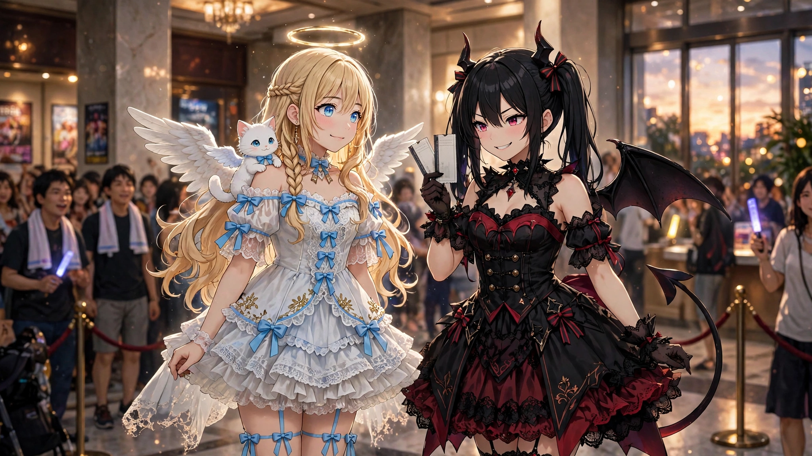
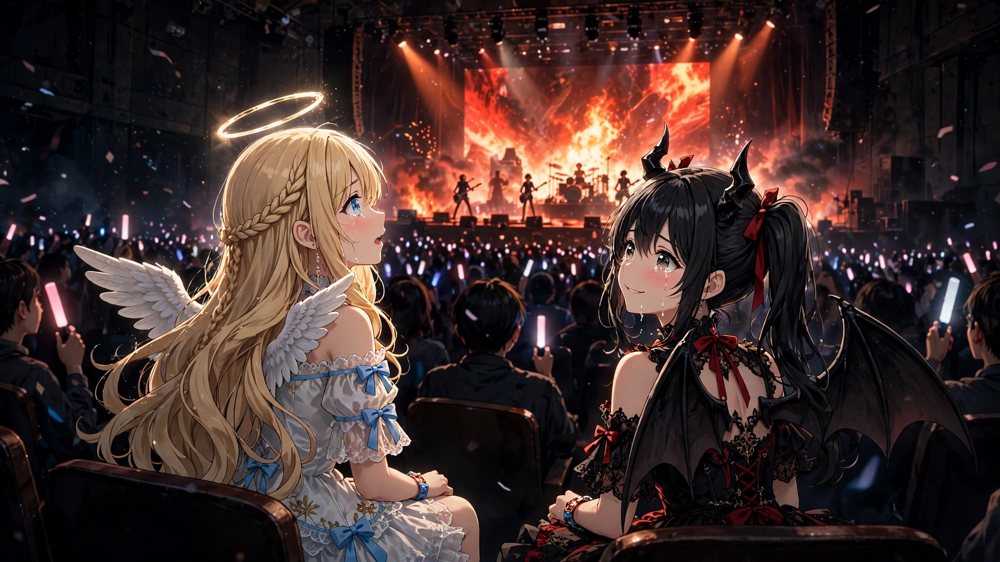
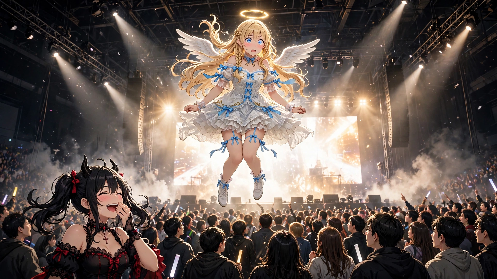
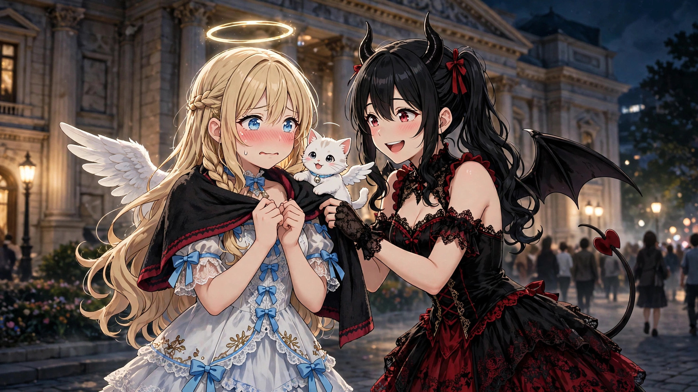

読み切り短編『跳んでたの、わたしだけ』を公開しました
2026年11月7日
読み切り短編『跳んでたの、わたしだけ』を公開しました。ルチアに誘われて、ガールズバンドフライのライブへ初めて行った日のお話です。
1. 誘われたのは、悪魔でした

「セラフィナ。あんた、ライブって行ったことある？」
その日の夕方、ルチアは珍しく、目をきらきらさせて言いました。手にはチケットが二枚。
「ライブ、ですか？ 演奏会なら、フィレンツェで……」
「違う違う。ロックのライブ。ガールズバンドフライの大阪公演、あたし、ずっと楽しみにしてたの。……べ、別に、あんたを誘いたかったわけじゃないわよ。当たったのが二枚だっただけ」
ガールズバンドフライ。日本橋のCDショップで、ポスターを何度も見かけたことがあります。叫ぶように歌う女の子たちのバンド。ルチアは思い出したように天井を見上げ、ふっと笑いました。
「あの子たちの歌はね、うまく生きられないやつの歌なの。……あたしら悪魔に、ちょうどいいのよ」
「ルチア……」
「なんでもない。とにかく、行くの。あんたも現代文化の勉強とか言ってたじゃない」
モコはわたしの肩の上で、小さく「みゃっ」と鳴きました。行く気満々の鳴き方です。
そうしてわたしは、初めてのライブへ行くことになりました。
ホールは人でいっぱいでした。グッズのタオルを首にかけた人、Tシャツの人、ペンライトを二本も持った人。五百年前、フィレンツェの教会で聞いた讃美歌の演奏会とは、空気がまったく違います。始まる前から、会場全体がそわそわと熱を持っていました。
「いいこと、セラフィナ。ライブはね、演者と客で一緒に作るものなの。体が動いたら、動いていい。恥ずかしがるほうが、恥ずかしいの」
ルチアのその言葉を、わたしはそのとき、深く信じてしまったのです。
2. 光と音の、真ん中で

暗転。ドラムの一打。
音が、お腹の底に響きました。大音量なのにうるさくない。不思議と、胸の奥が熱くなってくるような音。ステージの大きな画面には、炎のように揺れる映像が流れ、メンバーが全力で叫ぶように歌っています。
すごい、と思いました。
歌は、技術だけではありませんでした。うまく生きられない、という歌詞の叫びが、まっすぐに胸へ飛び込んでくるのです。わたしは思わず、隣のルチアを見ました。
ルチアは、泣きそうな顔で笑っていました。悪魔が。人の歌に。
「……ね、セラフィナ。文句なしでしょ」
「はい。文句なし、です」
曲が進むにつれ、会場の熱はどんどん上がっていきました。速い曲では手拍子がそろい、静かな曲では誰もが画面に見入り、息を潜めます。わたしも、立つ・座る・手拍子を、まわりの方々に合わせて覚えていきました。
ライブは、まわりに合わせるもの。
そのはずだったのです。その曲が来るまでは。
3. 跳んでたの、わたしだけ

クライマックスの曲でした。
画面の中で、ボーカルの子が大きく、高く跳びました。映像の炎がはじけ、光が会場を真っ白に染めた、その瞬間です。
わたしの体が、勝手に跳んでいました。
思いきり。精一杯に。
……と言いますか。跳んだあと、少しだけ、落ちてこなかったのです。翼が、気持ちに応えてほんの少し羽ばたいてしまったのだと思います。ふわり、と。宙に浮いたまま、わたしはゆっくりと周りを見渡しました。
誰も、跳んでいませんでした。
その曲は、跳ぶ曲ではなかったみたいです。みなさん、画面の演出に見入って、静かに、でも熱く、立ち尽くしていました。ペンライトも止まって。……その、止まったペンライトと、たくさんの視線が、少しずつ、こちらを向いていました。
浮いたままのわたしと、目が合う人、目が合う人。
あ、と思いました。
これは、だめなやつです。
わたしは慌てて、できるだけ何事もなかったように、ふわりと着地しました。スカートの裾を直し、輪を直し、何食わぬ顔で画面を見上げました。心臓が、ドラムより速く打っていました。
隣ではルチアが、肩を震わせて、下を向いていました。
4. ライブは、まわりに合わせて

終演後、夜風の吹くホールの外。
「……セラフィナ」
「は、はい」
「言っていい？」
「……どうぞ」
ルチアは、さっきから堪えていた笑いを、ついに吹き出しながら言いました。
「跳んでたの、あんただけよ。……しかも、長いこと浮いてた。あれはもう、ジャンプじゃなくて滞空。会場の半分くらい、あんた見てたわよ」
わたしの顔が、熱くなりました。よりにもよって、初めてのライブで。
「でもね」
ルチアは笑いながら、買ったばかりのツアータオルを、わたしの肩にかけてくれました。
「悪くなかったわよ、あんたのジャンプ。……あんだけ全力で跳べるやつ、そういない。次は、跳ぶ曲で跳びなさい。それだけよ」
モコがわたしの肩で、小さく跳ねて真似をしました。ルチアはそれを見て、また笑いました。
帰り道、わたしは誓いました。
跳ぶときは、曲と、まわりと、合わせること。浮くのは、お空だけにすること。
……でも、ほんの少しだけ、うれしくもありました。五百年前のわたしは、教会の隅で、じっと座っているだけだったから。
この街のライブは、体が勝手に跳んでしまうくらい、熱かったのです。
今日もおつかれさまです。また、連れていってくださいね、ルチア。
（了）
（了）